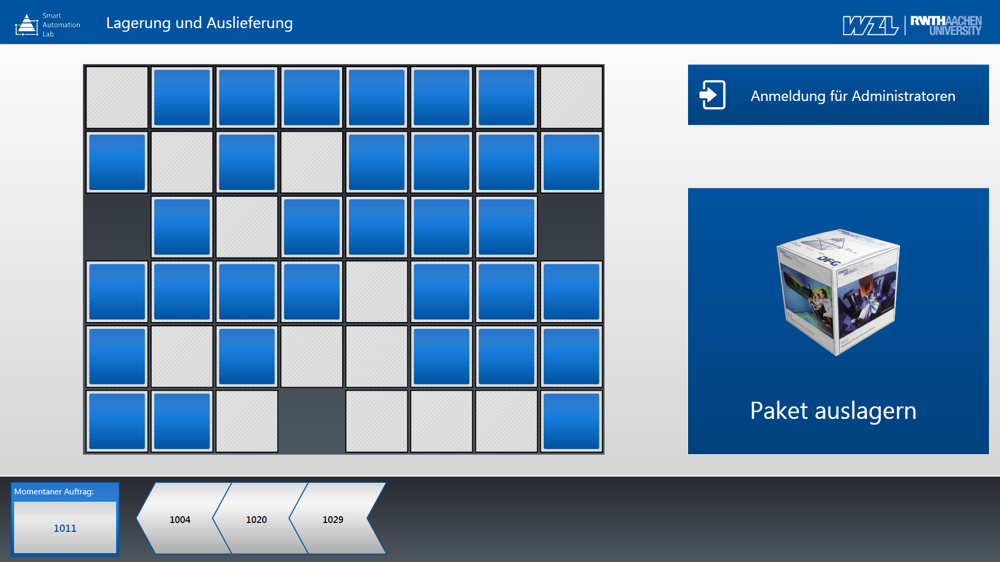
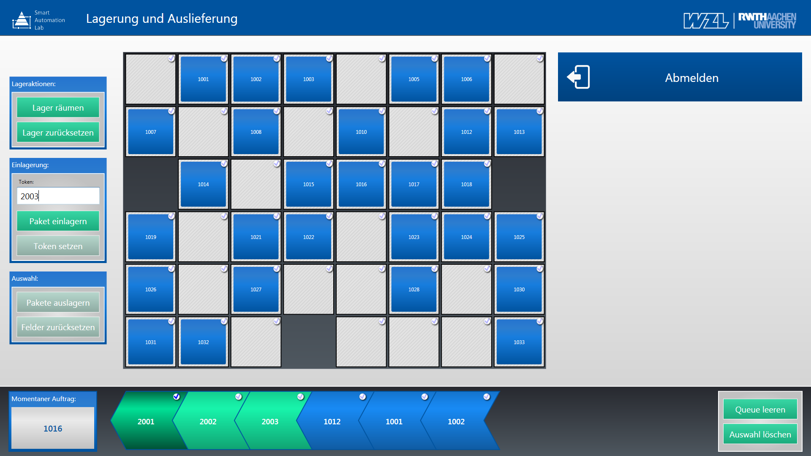
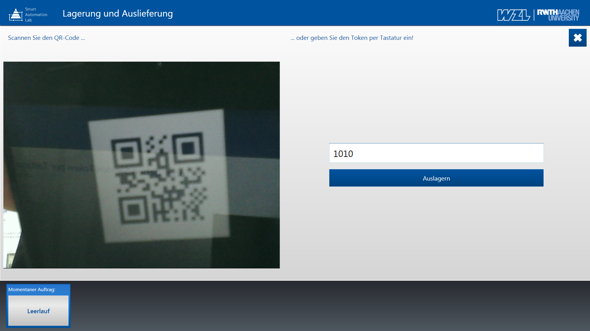

More information will be available soon.
Smart Automation Lab Storage
December 2014 till March 2016
with Thomas Küpper & Philipp Legran




December 2014 till March 2016
with Thomas Küpper & Philipp Legran
More information will be available soon.